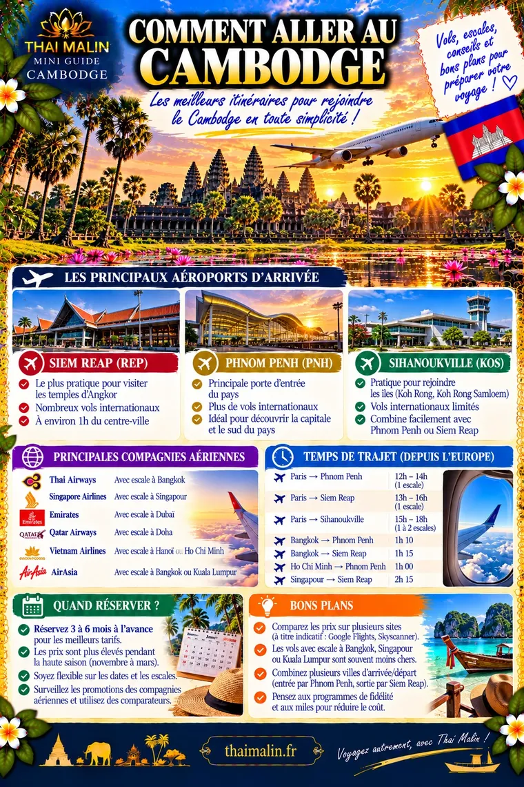
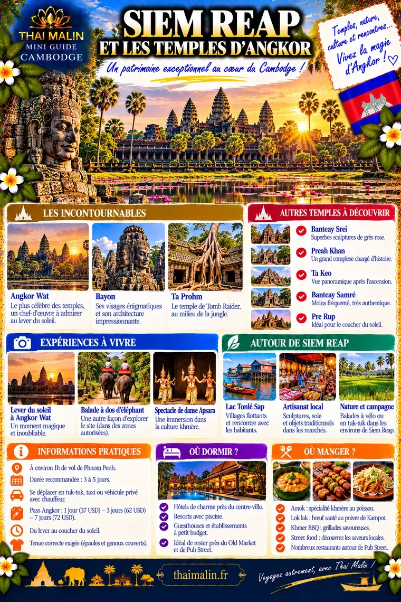
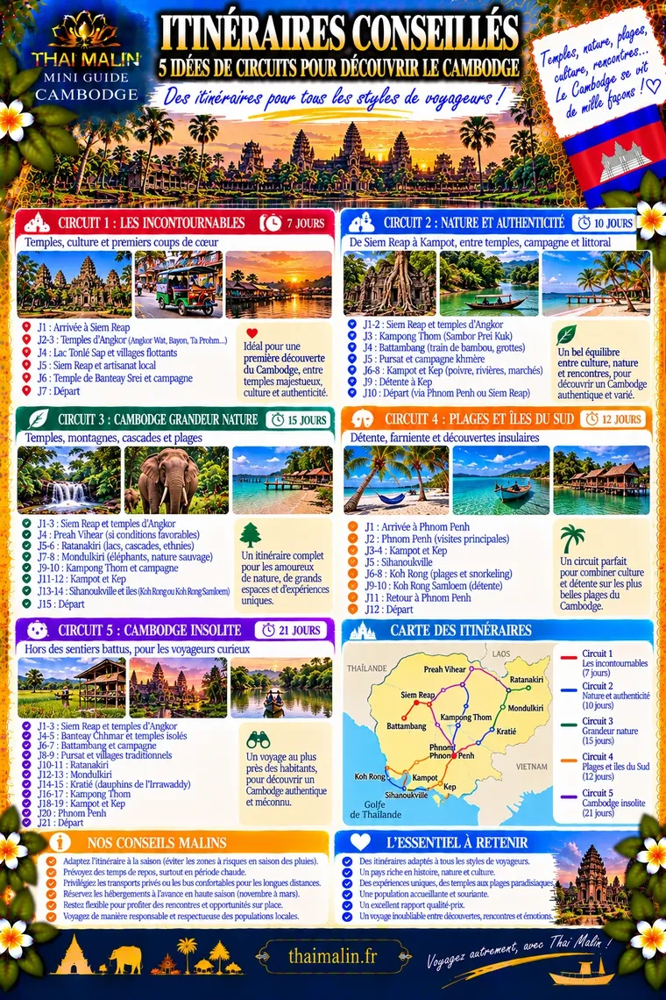

Aperçu gratuit · Édition 2026
🛕 Mini-guide Cambodge
Angkor, Phnom Penh, plages et rencontres authentiques
Comment aller au CambodgeAperçu 1/3

Siem Reap et les temples d’AngkorAperçu 2/3

Itinéraires conseillésAperçu 3/3

Il reste 22 pages à découvrir
Dans le guide complet :
- Visa, e-visa et formalités
- Phnom Penh, Siem Reap, Sihanoukville
- Kep, Kampot, Battambang, Ratanakiri
- Gastronomie et culture
- Hébergements, internet et eSIM
- Kit de survie en khmer
- Centre de réservation
Paiement sécurisé Stripe. Ton code arrive par e-mail juste après l’achat.